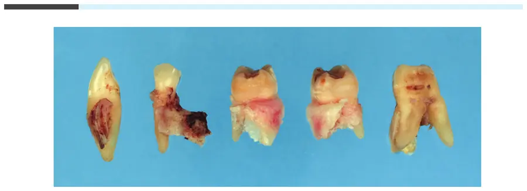
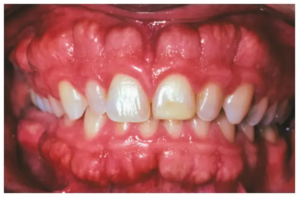

نسخه استخراجشده؛ ترجمه یا تأیید علمی انجام نشده است. وضعیت: captured
منطق پایه: کشیدن یک دندان معمولاً میطلبد که استخوان آلوئولار اطراف گشاد شود تا یک مسیر بیمانع برای برداشتن دندان فراهم شود. ولی در بعضی موقعیتها، استخوان بهجای گشاد شدن میشکند و همچنان چسبیده به دندان بیرون میآید.

محتملترین علت شکستن زائدهی آلوئولار، استفاده از نیروی بیش از حد با فورسپس است که صفحهی کورتیکال را میشکند.
و قاعدهای که این را به یک تصمیم بالینی تبدیل میکند: اگر نیروی بیش از حد برای برداشتن دندان لازم باشد، باید یک فلپ بافت نرم بلند شود و مقادیر کنترلشدهای از استخوان برداشته شود تا دندان تحویل شود؛ یا در مورد دندانهای چندریشه، دندان باید سکشن شود. اگر این اصل رعایت نشود و جراح به استفاده از نیروی بیش از حد یا کنترلنشده ادامه دهد، شکستگی استخوان معمولاً رخ میدهد.
پنج محتملترین محل شکستگی استخوان:
و یک نکته که همهی این پنج مورد را به هم وصل میکند: همهی این آسیبهای استخوانی با نیروی بیش از حد فورسپس ایجاد میشوند. — یعنی چهار محل از پنج محل در ماگزیلا هستند.
روش اصلی پیشگیری از این شکستگیها، انجام یک معاینهی دقیق پیش از عمل از زائدهی آلوئولار است — هم بالینی و هم رادیوگرافیک. و بهصورت چکلیست: معاینهی کامل بالینی و رادیوگرافیک پیش از عمل انجام بده، نیروی بیش از حد به کار نبر، از تکنیک کشیدن جراحی (باز) برای کم کردن نیروی لازم استفاده کن.

سه چیزی که جراح باید در آن معاینه ببیند:
و سه یافتهای که تدابیر ویژه میطلبند: اگر ریشهها بهشدت واگرا باشند، اگر ریشهها نزدیک سینوس قرار داشته باشند، یا اگر بیمار استخوان کورتیکال باکال سنگین داشته باشد — جراح باید تدابیر ویژهای برای پیشگیری از شکستن بخشهای بیش از حد استخوان به کار بندد.
و یک عامل چهارم که در معاینه دیده نمیشود: سن عاملی است که باید در نظر گرفته شود، چون استخوان بیماران مسنتر یا درشتاندامتر احتمالاً کمکشسانتر است و بنابراین بیشتر احتمال دارد بشکند تا اینکه گشاد شود.
و تصمیمی که از این ارزیابی بیرون میآید: با تعیین احتمال بالای شکستگی استخوان پیش از عمل، جراح باید انجام کشیدن با تکنیک جراحی باز را در نظر بگیرد. مزیت این روش سهگانه است: جراح میتواند مقدار کمتر و کنترلشدهتری از استخوان بردارد، که به التیام سریعتر و شکل ریج مطلوبتر برای بازسازی پروتزی میانجامد.
و یک راهبرد اختصاصی برای مولر ماگزیلای نزدیک سینوس: وقتی مولر ماگزیلا نزدیک سینوس ماگزیلا قرار دارد، اکسپوز جراحی دندان همراه با سکشن کردن ریشهها به دو یا سه بخش، معمولاً از برداشته شدن بخشی از کف سینوس ماگزیلا پیشگیری میکند — و همین به پیشگیری از تشکیل فیستول دهانی-سینوسی کمک میکند، که معمولاً برای بستنش اعمال ثانویه لازم است.
جمعبندی: پیشگیری از شکستگی بخشهای بزرگ صفحهی کورتیکال به سه چیز بستگی دارد: ارزیابیهای رادیوگرافیک و بالینی پیش از عمل، پرهیز از به کار بردن مقادیر بیش از حد نیروی کنترلنشده، و تصمیم زودهنگام به انجام کشیدن باز با برداشت مقادیر کنترلشدهی استخوان و سکشن دندانهای چندریشه.
و یک قاعدهی تصمیمگیری حین عمل: در جریان کشیدن با فورسپس، اگر مقدار مناسب تحرک دندان زود رخ ندهد، جراحِ خردمند و محتاط طرح درمان را به تکنیک جراحی تغییر میدهد، بهجای اینکه روش بسته را دنبال کند.